Name: Math 243: Calculus C
Exam 3 Solution Guide
26 April 2002
Always the beautiful answer who asks a more beautiful question.
-E. E. Cummings
Instructions: Show all work to receive full or partial credit. You may use a scientific calculator on this exam. All University rules and guidelines for student conduct are applicable.
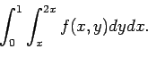
The first step is to sketch the region of integration.
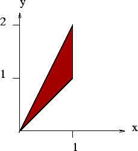
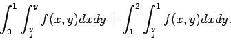
The toughest part of problems involving double and triple integrals is determining the proper region. After doodling around a little and roughly drawing each surface, you should see the intersection start to emerge. In the end, it will look like
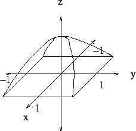
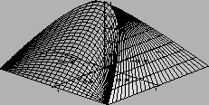
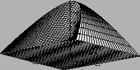
Integrating the density over this region, we find that
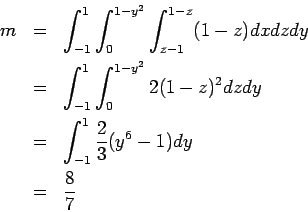
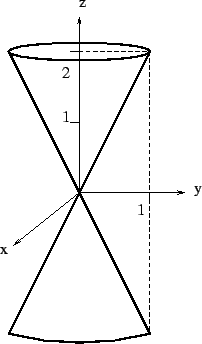
By symmetry, we can find the volume of one cone and then multiply by
two. We see that the edge of the cone satisfies the equation z=2rif we use cylindrical coordinates. Thus, the total volume is
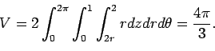
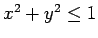
and the sphere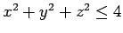
.
Either cylindrical or spherical coordinates will do the trick fairly directly for this problem. Both approaches will involve two pieces. Here, I present a solution using spherical coordinates. Let R1 be the wedges at the top and bottom. Let R2 be the cylinders with the wedges removed.
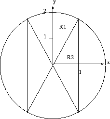
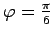
. For R1, the limits of integration are fairly routine.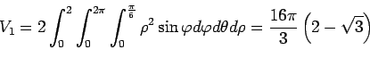
The second volume is a little more subtle because the outer bound on
 corresponds to r=1 in cylindrical coordinates. In other
words,
corresponds to r=1 in cylindrical coordinates. In other
words,
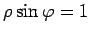
, so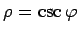
is the outside boundary. Thus, the volume can be expressed by the integral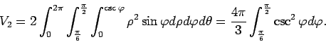
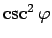
is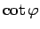
. This is understandable, and getting this far is worth most of the points for the problem. To complete the problem, we see that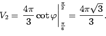
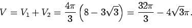
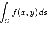
We can parametrize this line as
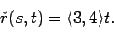
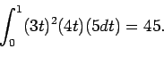